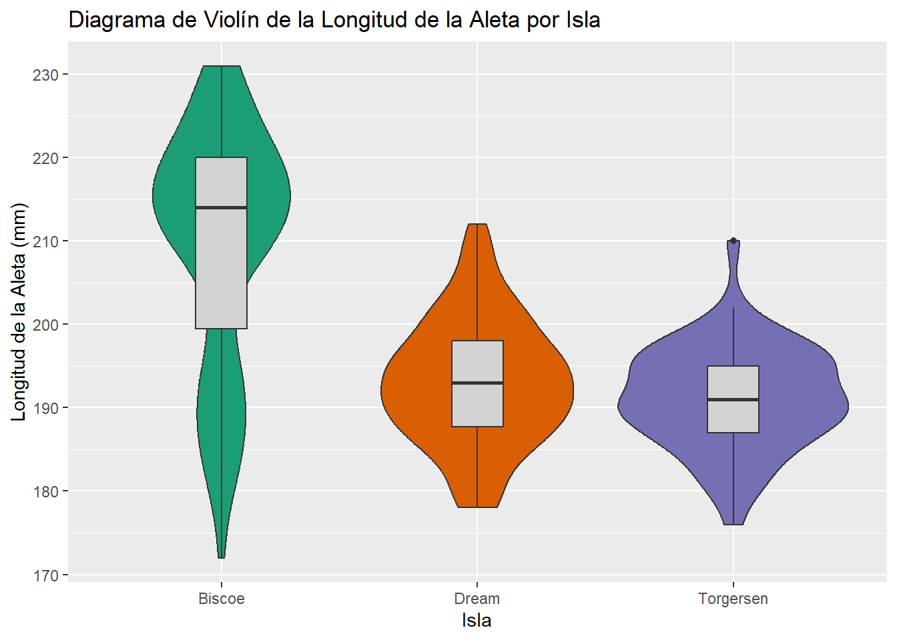
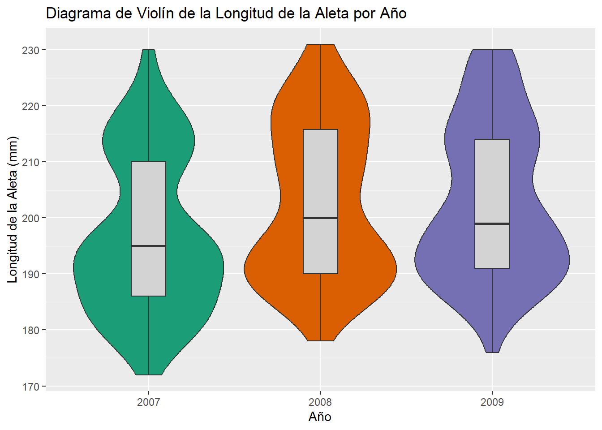

install.packages("palmerpenguins")
install.packages("ggplot2")
install.packages("stat_binhex")
install.packages("corrplot")
install.packages("tidyr")Entrega 1
Instalamos los paquetes que vamos a necesitar:
library(palmerpenguins)
library(ggplot2)
#library(stat_binhex)
library(corrplot)
library(tidyr)Exploración inicial y descripción de variables.
En primer lugar, visualizaremos el conjunto de datos.
library(palmerpenguins)
str(penguins)tibble[,8] [344 x 8] (S3: tbl_df/tbl/data.frame)
$ species : Factor w/ 3 levels "Adelie","Chinstrap",..: 1 1 1 1 1 1 1 1 1 1 ...
$ island : Factor w/ 3 levels "Biscoe","Dream",..: 3 3 3 3 3 3 3 3 3 3 ...
$ bill_length_mm : num [1:344] 39.1 39.5 40.3 NA 36.7 39.3 38.9 39.2 34.1 42 ...
$ bill_depth_mm : num [1:344] 18.7 17.4 18 NA 19.3 20.6 17.8 19.6 18.1 20.2 ...
$ flipper_length_mm: int [1:344] 181 186 195 NA 193 190 181 195 193 190 ...
$ body_mass_g : int [1:344] 3750 3800 3250 NA 3450 3650 3625 4675 3475 4250 ...
$ sex : Factor w/ 2 levels "female","male": 2 1 1 NA 1 2 1 2 NA NA ...
$ year : int [1:344] 2007 2007 2007 2007 2007 2007 2007 2007 2007 2007 ...nrows=nrow(penguins)Vemos que hay 344 observaciones de 8 variables:
- Especie, cualitativa nominal politómica.
Hemos visto ya en la descripción del tibble que hay tres especies de pingüino. Para ver qué especies son y cuántos ejemplares hay de cada una, utilizamos el siguiente codigo.
x=table(penguins$species)
c(x,"NA's"=sum(is.na(penguins$species))) Adelie Chinstrap Gentoo NA's
152 68 124 0 Por tanto, de más a menos común, hay pingüinos de las especies Adelie, Gentoo y Chinstrap.
- Isla, cualitativa nominal politómica.
x=table(penguins$island)
c(x,"NA's"=sum(is.na(penguins$islands))) Biscoe Dream Torgersen NA's
168 124 52 0 De más a menos cantidad, hay pingüinos en las islas Biscoe, Dream y Torgersen.
- Longitud del pico (en milímetros), cuantitativa continua (discretizada a \(10^{-4}\) metros).
Min. 1st Qu. Median Mean 3rd Qu. Max. NA's
32.10 39.23 44.45 43.92 48.50 59.60 2 El pico más corto mide 32.1 milímetros, y el más largo, 59.6. El primer cuartil de esta variable es 39.225, la mediana 44.45 y el tercero 48.5. La media es de 43.9219298 y la desviación típica muestral de NA. Además, hay 2 valores NA.
- Profundidad del pico (en milímetros), cuantitativa continua (discretizada a \(10^{-4}\) metros).
Min. 1st Qu. Median Mean 3rd Qu. Max. NA's
13.10 15.60 17.30 17.15 18.70 21.50 2 El pico más fino mide 13.1 milímetros, y el más grueso, 21.5. El primer cuartil de esta variable es 15.6, la mediana 17.3 y el tercero 18.7. La media es de 17.1511696 y la desviación típica muestral de NA. Además, hay 2 valores NA.
- Longitud de la aleta (en milímetros), cuantitativa continua (discretizada a los milímetros).
Min. 1st Qu. Median Mean 3rd Qu. Max. NA's
172.0 190.0 197.0 200.9 213.0 231.0 2 La aleta más corta mide 172 milímetros, y la más larga, 231. El primer cuartil de esta variable es 190, la mediana 197 y el tercero 213. La media es de 200.9152047 y la desviación típica muestral de NA. Además, hay 2 valores NA.
- Peso (en gramos), cuantitativa continua (discretizada a los múltiplos de \(5\) gramos).
Min. 1st Qu. Median Mean 3rd Qu. Max. NA's
2700 3550 4050 4202 4750 6300 2 El pingüino más liviano pesa 2700 gramos, y el más pesado, 6300. El primer cuartil de esta variable es 3550, la mediana 4050 y el tercero 4750. La media es de 4201.754386 y la desviación típica muestral de NA. Además, hay 2 valores NA.
- Sexo, cualitativa nominal dicotómica.
x=table(penguins$sex)
c(x,"NA's"=sum(is.na(penguins$sex)))female male NA's
165 168 11 - Año, ordinal.
x=table(penguins$year)
c(x,"NA's"=sum(is.na(penguins$year)))2007 2008 2009 NA's
110 114 120 0 - Especie, cualitativa nominal politómica.
- Isla, cualitativa nominal politómica.
- Longitud del pico (en milímetros), cuantitativa continua (discretizada a \(10^{-4}\) metros).
- Profundidad del pico (en milímetros), cuantitativa continua (discretizada a \(10^{-4}\) metros).
- Longitud de la aleta (en milímetros), cuantitativa continua (discretizada a los milímetros).
- Peso (en gramos), cuantitativa continua (discretizada a los múltiplos de \(5\) gramos).
- Sexo, cualitativa nominal dicotómica.
- Año,
La unidad muestral de la tabla es un pingüino. Para comprobar que las variables están discretizadas a las unidades que afirmamos, sencillamente hemos observado a qué unidad están redondeadas, y para la variable de peso, hemos utilizado la siguiente instrucción:
pesos=na.omit(penguins$body_mass_g)
sum(pesos%%5)[1] 0Deducimos que no hay ningún dato que no sea múltiplo de 5 (si hubiese alguno, la suma sería \(>0\)).
library(ggplot2)
species_colors = c("orange", "purple", "darkcyan")Descripción de las variables
Especie
Esta variable es cualitativa nominal polinómica con tres niveles: Adelie, Chinstrap y Gentoo.
table(penguins$species)
Adelie Chinstrap Gentoo
152 68 124 p <- ggplot(penguins, aes(x=species, fill=species)) +
geom_bar() +
labs(x = "Especie de Pingüino", y = "Frecuencia",
title = "Frecuencias de las Especies de Pingüino") +
scale_fill_brewer(palette = "Dark2") +
theme(legend.position="none")
print(p)
Isla
Esta variable es cualitativa nominal polinómica con tres niveles: Biscoe, Dream y Torgersen.
table(penguins$island)
Biscoe Dream Torgersen
168 124 52 p <- ggplot(penguins, aes(x=island, fill=island)) +
geom_bar() +
labs(x = "Isla", y = "Frecuencia",
title = "Poblaciones de las Islas") +
scale_fill_brewer(palette = "Dark2") +
theme(legend.position="none")
print(p)
Longitud del pico
Esta variable es cuantitativa contínua (discretizada a \(10^{-4}\) metros).
summary(penguins$bill_length_mm) Min. 1st Qu. Median Mean 3rd Qu. Max. NA's
32.10 39.23 44.45 43.92 48.50 59.60 2 sd(penguins$bill_length_mm, na.rm = TRUE)[1] 5.459584Tenemos que la media de la longitud del pico para la población total es de unos 43.92 mm con una desviación típica de 5.46 mm.
Profundidad del pico
Esta variable es cuantitativa contínua (discretizada a \(10^{-4}\) metros).
summary(penguins$bill_depth_mm) Min. 1st Qu. Median Mean 3rd Qu. Max. NA's
13.10 15.60 17.30 17.15 18.70 21.50 2 sd(penguins$bill_depth_mm, na.rm = TRUE)[1] 1.974793Tenemos que la media de la profundidad del pico para la población total es de unos 17.15 mm con una desviación típica de 1.97 mm.
Longitud de la aleta
Esta variable es cuantitativa contínua (discretizada a \(10^{-4}\) metros).
summary(penguins$flipper_length_mm) Min. 1st Qu. Median Mean 3rd Qu. Max. NA's
172.0 190.0 197.0 200.9 213.0 231.0 2 sd(penguins$flipper_length_mm, na.rm = TRUE)[1] 14.06171Tenemos que la media de la longitud del pico para la población total es de unos 197 mm con una desviación típica de 14 mm.
Peso
Esta variable es cuantitativa contínua (discretizada a múltiplos de 5 gramos).
summary(penguins$body_mass_g) Min. 1st Qu. Median Mean 3rd Qu. Max. NA's
2700 3550 4050 4202 4750 6300 2 sd(penguins$body_mass_g, na.rm = TRUE)[1] 801.9545Tenemos que la media de la profundidad del pico para la población total es de unos 4.2 kg con una desviación típica de 0.8 kg.
Sexo
Esta variable es cualitativa nominal dicotómica.
table(penguins$sex)
female male
165 168 p <- ggplot(na.omit(penguins), aes(x=sex, fill=sex)) +
geom_bar() +
labs(x = "Sexo", y = "Frecuencia",
title = "Frecuencias del Sexo del Pingüino") +
theme(legend.position="none")
print(p)
Año
Esta variable es cualitativa e indica el año en el que se produjo el estudio:
table(penguins$year)
2007 2008 2009
110 114 120 
Comparación de las variables cuantitativas según la especie


Veamos en qué islas habitan principalmente las tres especies:
p <- ggplot(penguins, aes(fill=island, x=species)) +
geom_bar() +
labs(x = "Especie de Pingüino", y = "Frecuencia",
title = "Distribución de la población por isla y especie")
print(p)
Tenemos que la especie Gentoo se encuentra únicamente en la isla Biscoe y Chinstrap está sólo en Dream. Por otra parte, Adelie se puede encontrar en las tres islas y es la que tiene una mayor población de pingüinos.
Se puede observar que en función de la isla que tratemos, habitan más pingüinos de una especie u otra:
En la isla de Biscoe habitan todos los pingüinos de la especie Gentoo y también hay algunos de la especie Adelie, pero no hay de la especie Chinstrap.
En la isla de Dream cohabitan pingüinos de las especies Adelie y Chinstrap, y es la isla en la que habitan todos los pingüinos de esta última especie.
Finalmente, en la isla de Torgersen sólo habitan pingüinos de la especie Adelie. >>>>>>> f72ef4ca761635623c8dbdebecf36e411ec650f9
# Crea un objeto ggplot
p <- ggplot(penguins, aes(x = penguins$species, y = penguins$bill_length_mm)) +
geom_boxplot() +
labs(x = "Especie de Pingüino", y = "Longitud del Pico (mm)",
title = "Longitud del Pico por Especie de Pingüino")
print(p)
En el siguiente gráfico se puede comprobar que la especie Gentoo tiene la aleta media más larga, y Adelie tiene el pico medio más corto.
En el siguiente gráfico se puede comprobar que la especie Gentoo tiene la aleta media más larga, y Adelie tiene el pico medio más corto.
p <- ggplot(penguins, aes(x = penguins$bill_length_mm, y = penguins$flipper_length_mm, color = species)) +
geom_point() +
labs(x = "Longitud del Pico (mm)", y = "Longitud de la Aleta (mm)",
title = "Longitud del Pico vs. Longitud de la Aleta por Especie de Pingüino") +
scale_color_manual(values=species_colors)
print(p)
p <- ggplot(penguins, aes(x = species)) +
geom_bar() +
labs(x = "Especie de Pingüino", y = "Frecuencia",
title = "Gráfico de Barras de la Distribución de Especies")
print(p)
p <- ggplot(penguins, aes(x = species, y = flipper_length_mm, fill = species)) +
geom_violin() +
labs(x = "Especie de Pingüino", y = "Longitud de la Aleta (mm)",
title = "Diagrama de Violín de la Longitud de la Aleta por Especie de Pingüino") +
scale_fill_brewer(palette = "Dark2")
print(p)
p <- ggplot(penguins, aes(x = year, y = flipper_length_mm, color = species)) +
geom_line() +
labs(x = "Año", y = "Longitud de la Aleta (mm)",
title = "Evolución de la Longitud de la Aleta por Especie de Pingüino")
print(p)
p <- ggplot(penguins, aes(x = species, y = flipper_length_mm, fill = sex)) +
geom_bar(stat = "identity", position = "stack") +
labs(x = "Especie de Pingüino", y = "Longitud de la Aleta (mm)",
title = "Gráfico de Barras Apiladas de la Longitud de la Aleta por Género") +
scale_fill_brewer(palette = "Set3")
print(p)
p <- ggplot(penguins, aes(x = bill_length_mm, y = flipper_length_mm)) +
geom_hex() +
labs(x = "Longitud del Pico (mm)", y = "Longitud de la Aleta (mm)",
title = "Dispersión de la Longitud del Pico y de la Aleta")
print(p)
p <- ggplot(penguins, aes(x = "", fill = sex)) +
geom_bar(width = 1) +
coord_polar(theta = "y") +
facet_wrap(~species) +
labs(x = NULL, y = NULL,
title = " Proporción de Género por Especie de Pingüino") +
theme_void() +
scale_fill_brewer(palette = "Set2")
print(p)
p <- ggplot(penguins, aes(x = bill_length_mm, y = body_mass_g)) +
geom_point(aes(color = species)) +
geom_smooth(method = "lm", se = FALSE, color = "black") +
labs(x = "Longitud del Pico (mm)", y = "Masa Corporal (g)",
title = "Longitud del Pico y Masa Corporal por Especie de Pingüino") +
scale_color_brewer(palette = "Set2")
print(p)
p <- ggplot(penguins, aes(x = bill_length_mm, y = bill_depth_mm, color = species)) +
geom_point() +
geom_smooth(method = "lm", se = FALSE) +
labs(x = "Longitud del Pico (mm)", y = "Profundidad del Pico (mm)",
title = "Dimensiones del Pico por Especie de Pingüino") +
scale_color_brewer(palette = "Set2")
print(p)
library(ggplot2)
p <- ggplot(penguins, aes(x = flipper_length_mm, y = body_mass_g, size = bill_length_mm, color = species)) +
geom_point(alpha = 0.7) +
scale_size_continuous(range = c(3, 10)) +
labs(x = "Longitud de la Aleta (mm)", y = "Peso Corporal (g)",
title = "Longitud de Aleta vs. Peso Corporal vs. Tamaño del Pico por Especie de Pingüino")
print(p)
Tenemos que la especie Gentoo tiene de media una aleta más larga y pesa más que la mayoría de ejemplares de las dos especies restantes.
p <- ggplot(penguins, aes(x = island, fill = species)) +
geom_bar() +
labs(x = "Isla", y = "Número de Especies",
title = "Número de Especies por Isla") +
scale_fill_brewer(palette = "Set2")
print(p)
library(ggplot2)
p <- ggplot(penguins, aes(x = year, y = body_mass_g)) +
geom_point() +
labs(x = "Año", y = "Peso Corporal (g)",
title = " Año vs. Peso Corporal de Pingüinos")
print(p)
library(ggplot2)
p <- ggplot(penguins, aes(x = year, y = body_mass_g)) +
geom_bar(stat = "summary", fun = "mean", fill = "skyblue") +
labs(x = "Año", y = "Peso Corporal Promedio (g)",
title = "Peso Corporal Promedio de Pingüinos por Año")
print(p)
FRANK LO DE LOS PESOS UNA MIERDA QUITALO
library(ggplot2)
p <- ggplot(penguins, aes(x = interaction(species, island), y = bill_length_mm)) +
geom_bar(stat = "summary", fun = "mean", fill = "skyblue", position = "dodge") +
labs(x = "Especie e Isla", y = "Longitud del Pico Promedio (mm)",
title = "Longitud del Pico Promedio por Combinación de Especie e Isla") +
theme(axis.text.x = element_text(angle = 45, hjust = 1))
print(p)
#Para poder la foto:
#descarga la foto y pollo en el directori del cartografia
# instruccion: ![Descripcion que quieras]{ruta}